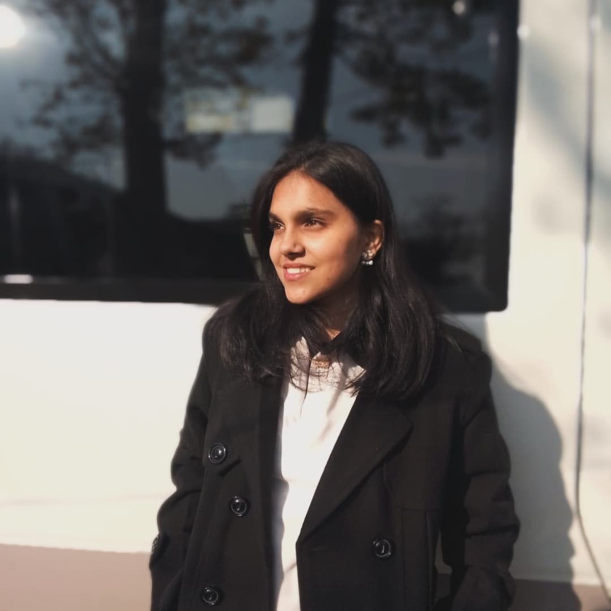

Wah Cantt, Pakistan | Email: its.ramlahmunir@gmail.com | Phone: +92 326 0518310
LinkedIn: linkedin.com/in/ramlah-munir | GitHub: github.com/Ramlah7

Computer Science undergraduate passionate about AI, Cybersecurity, and Software Development. Skilled in multiple programming languages and frameworks, including Python, Java, and C++. Recognized for leadership, creative problem solving, and team collaboration. Actively contributes to coding societies and technical events.
BS in Computer Science – COMSATS University, Wah Campus (2023–2027)
Intermediate in Computer Science – Base College, Wah (2023)